Installation for SAP BTP Kyma and HANA Cloud
The Graph Universe (GUV) can be installed on the SAP Business Technology Platform (BTP). The SAP Kyma environment is a Kubernetes (K8S) environment within the SAP BTP. As a persistence layer the SAP HANA Cloud database can be used.
The required installation steps are described here.
Prerequisites
The following components are required:
- SAP BTP account
- SAP Kyma Cluster
- SAP HANA Cloud Instance
You can get a trial acess for free. See the SAP Developer Tutorials and search for "Kyma" and "HANA".
Check the HANA database
Login to your SAP BTP subaccount and select "Instances and Subscriptions". You should find an installed "SAP HANA Cloud" Application.
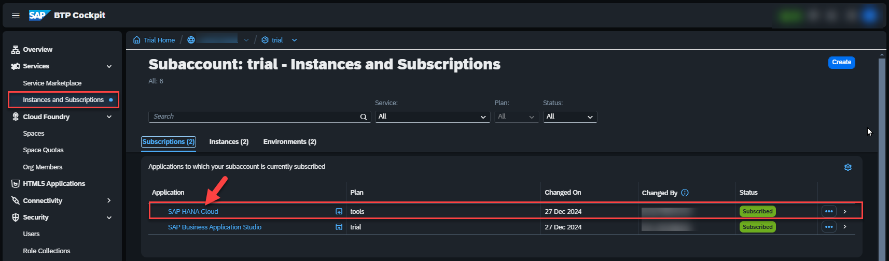
Enter the "HANA Cloud Central" Cockpit by selecting the "SAP HANA Cloud" application.
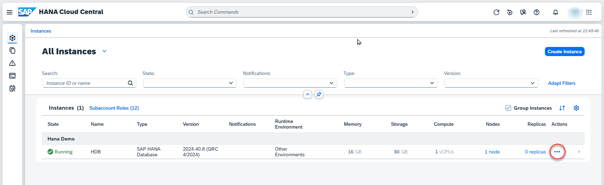.
Enter the context menu via "Action" and select "Copy SQL Endpoint".
Your copied endpoint should be like this:
0cf183xx-xxxa-xx71-83xx-5ff37xxx324.hana.trial-us10.hanacloud.ondemand.com:443
Check the DB user and password to access this instance.
Prepare the Kyma cluster
Go to your SAP BTP subaccount "Overview" and check the "Kyma Environment".
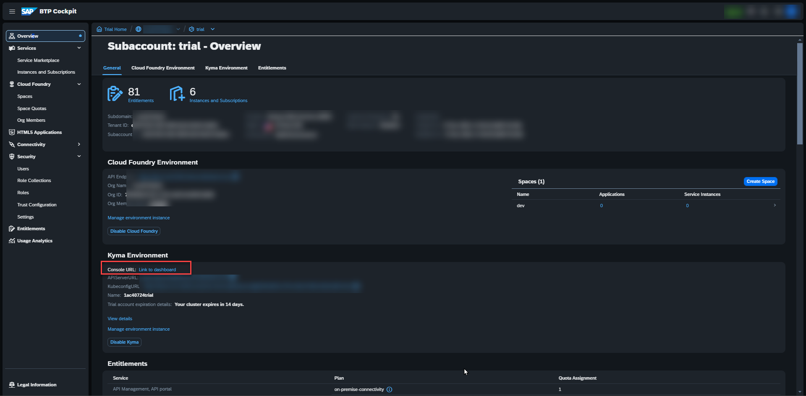
Select the "Link to dashboard".
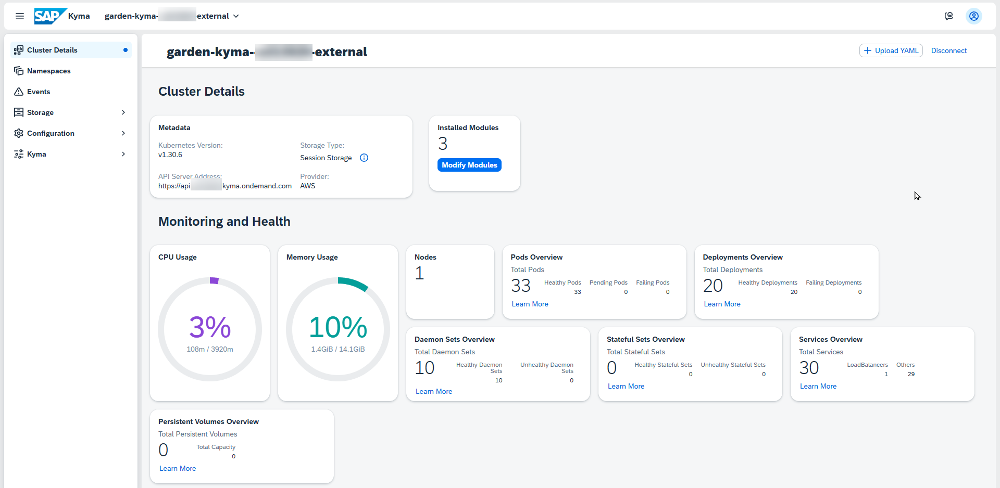
Create a namespace
Select Namespaces and Create.
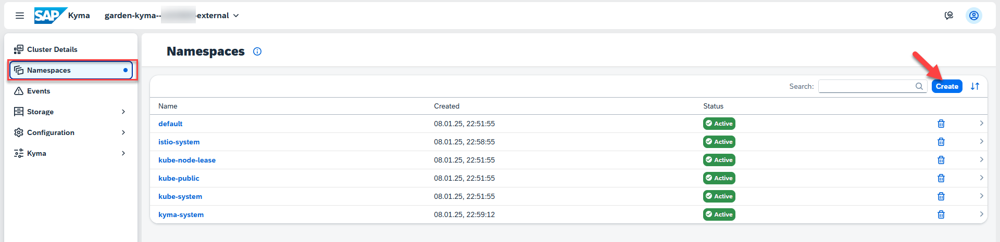
Switch to the "Form" view. Enter a valid name: e.g. guv-demo and confirm with Create.
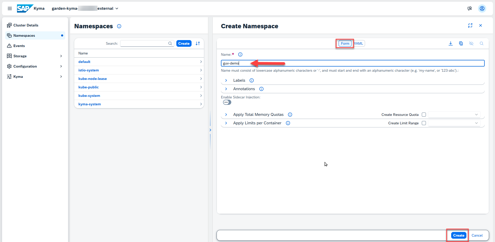
A new Kyma namespace is visible and You will see an empty dashboard.
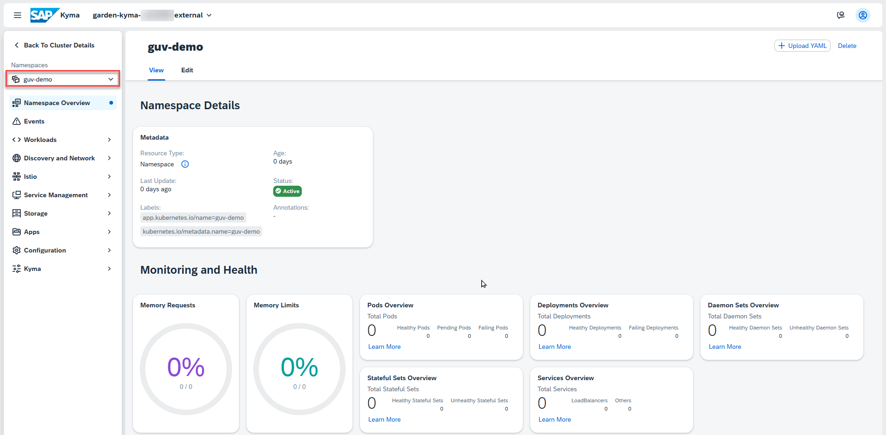
Create the secrets for HANA
In this step You will create a secret for storing the secret connection information to the HANA Cloud database.
Enter Configuration and Secret.
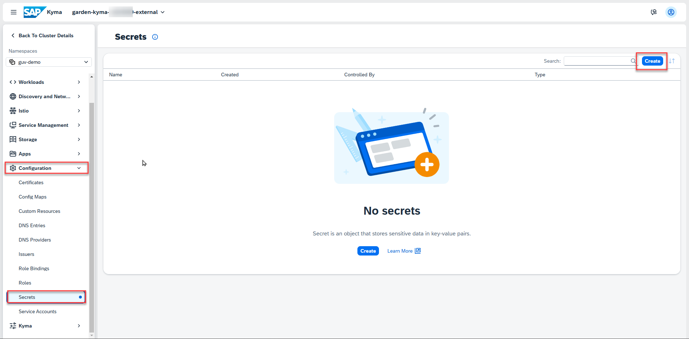
Select Create.
Fill the scret form:
- select the Form view if not selected
- use guv-dbas name for the secret
- select Type = Opaque
- enter hana:// + url
- enter your DB User as parameter user - e.g. DBADMIN
- enter your DB Password as parameter password
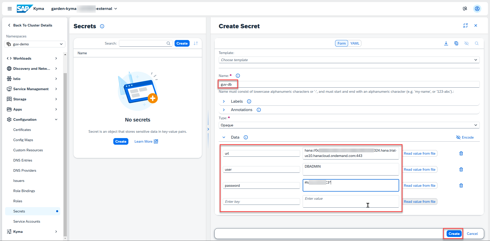
Select Create.
Create deployment
In this step the required kubernetes artifacts are created by a complex yaml file.
Enter the Namespace Overview and get your cluster id. You will find this at the top.
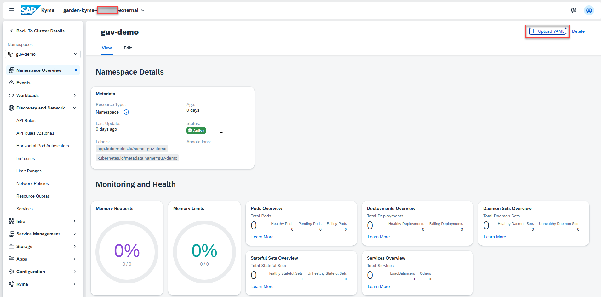
Copy the following yaml snippet to the clipboard.
kind: PersistentVolumeClaim
apiVersion: v1
metadata:
name: guv-srv-data
labels:
app: guv
spec:
accessModes:
- ReadWriteOnce
resources:
requests:
storage: 100Mi
---
apiVersion: apps/v1
kind: Deployment
metadata:
name: guv-api
labels:
app: guv
spec:
replicas: 5
selector:
matchLabels:
app: guv
template:
metadata:
labels:
app: guv
spec:
terminationGracePeriodSeconds: 10
containers:
- name: guv-api
image: ghcr.io/b-tocs/btocs_guvapi
imagePullPolicy: Always
ports:
- containerPort: 8000
env:
- name: SERVER_ROLE
value: "demo"
- name: PYTHONUNBUFFERED
value: "1"
- name: B2X_RESTAPI_CORS_ENABLED
value: "true"
- name: B2X_RESTAPI_CORS_HOSTS
value: '["*"]'
- name: B2X_RESTAPI_CORS_METHODS
value: '["*"]'
- name: B2X_RESTAPI_CORS_HEADERS
value: '["*"]'
- name: B2X_REDIS_DEFAULT_HOST
value: guv-kvc
- name: DB_CONNECT_URL
valueFrom:
secretKeyRef:
name: guv-db
key: url
- name: DB_USER
valueFrom:
secretKeyRef:
name: guv-db
key: user
- name: DB_PASSWORD
valueFrom:
secretKeyRef:
name: guv-db
key: password
volumeMounts:
- name: guv-srv-data
mountPath: /data
volumes:
- name: guv-srv-data
persistentVolumeClaim:
claimName: guv-srv-data
---
apiVersion: v1
kind: Service
metadata:
name: guv-api
labels:
app: guv
spec:
selector:
app: guv
ports:
- protocol: TCP
port: 8000
targetPort: 8000
---
apiVersion: gateway.kyma-project.io/v1beta1
kind: APIRule
metadata:
labels:
app.kubernetes.io/name: guv-demo-api
name: guv-demo-api
namespace: guv-demo
spec:
gateway: kyma-system/kyma-gateway
host: guv-demo-api.<your cluster>.kyma.ondemand.com
rules:
- accessStrategies:
- handler: no_auth
methods:
- GET
- POST
- PUT
- DELETE
- PATCH
- HEAD
- OPTIONS
- CONNECT
- TRACE
path: /.*
service:
name: guv-api
port: 8000
Select the button Upload YAML and insert the clipboard at the left text area.
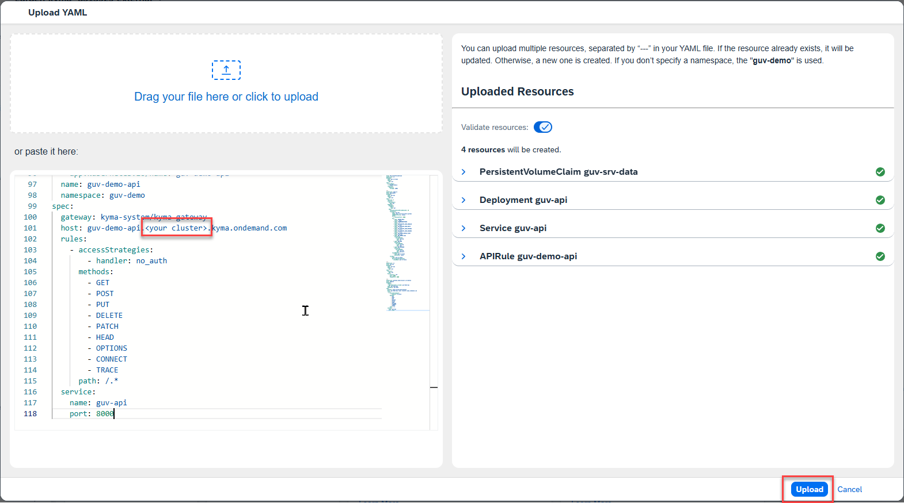
Change the text your cluster id with the id of your cluster: e.g. a12345678.
Tip: You will find this id in the url of the current Kyma dashboard view too.
Push the Upload button now. You should get a success information.
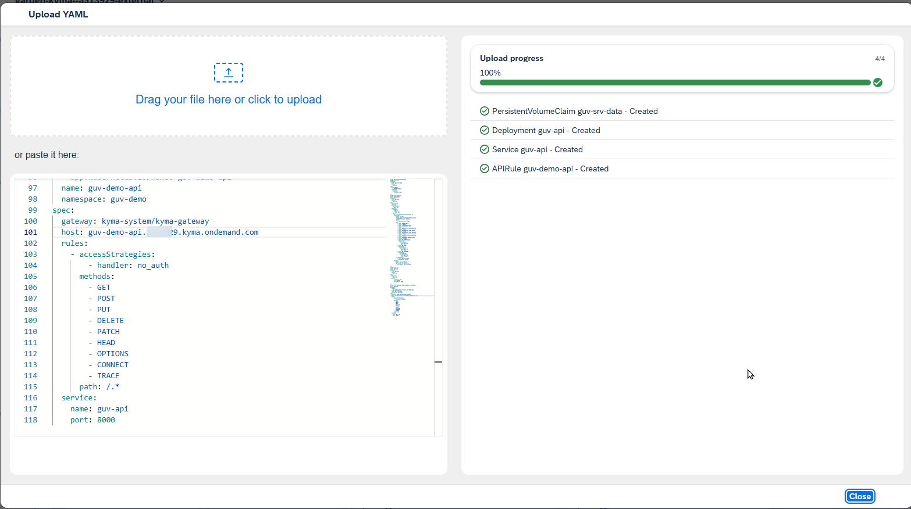
Close the popup.
Check the GUV API Service
Go to Discovery and Network and select API Rules. A new created rule guv-demo-api should be displayed. Select this rule.
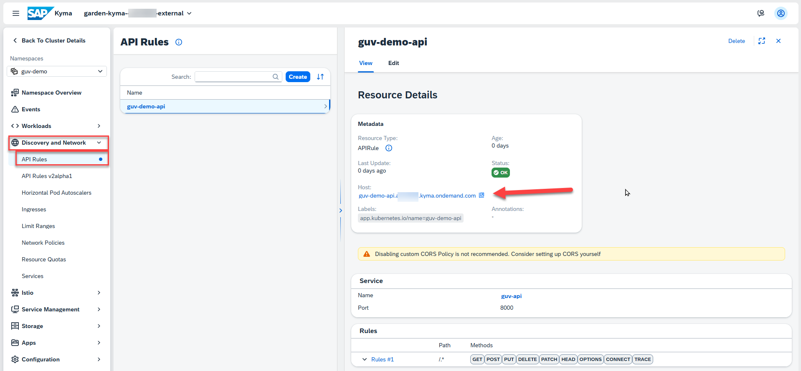
You will find the endpoint URL of the GUV API service in Metadata -> `host'. Select this URL.
A local brower should be opened and You will see this output.
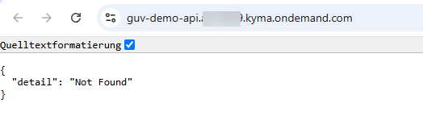
Append a /info the the URL and You will get a detailed information.
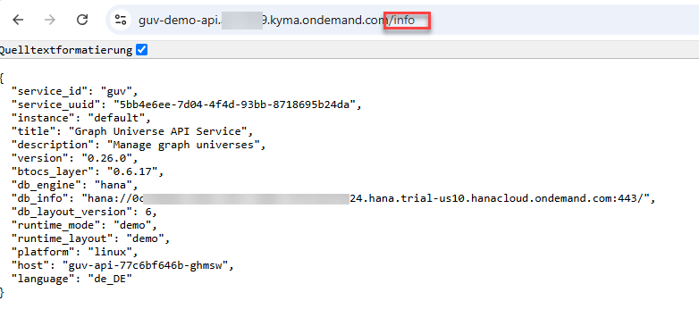
Conclusion and further information
With these steps you have installed an GUV API service on top of an SAP HANA Cloud database within an kubernetes environment for demo purposes.
Scalability
The service runs with 5 replicas to demonstrate the scalabilty. You can modify this by changing the deployment guv-api.
Configuration
The service can be configured by environment variables. This can be done by changing the deployment.
Security
The demo service is configured unsecure by default and will be configured by environment variables. See the documentation for the GUV API Service.
You can add SAP BTP security options by changing the api rule.
Additional services
The GUV API Service can be enhanced by other services in the same namespace like REDIS as Cache, AI or eventing services. See the corresponding documentation and add deployments to your namespace.